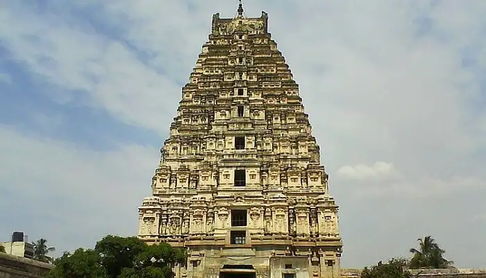

 Your spiritual journey to this land of enlightenment will find new meaning at Vishnupad Temple., which also happens to be one of the most popular temples in Bihar This 100 feet high architectural masterpiece of gray granite has 8 rows of carved pillars with an octagonal shrine, where the footprints of Lord Vishnu (Dharmasila) have been kept for worship. People from across India gather in the city during Pitra Paksha to perform the last ritual, called “Pind Dana”of departed souls. According to Hindu beliefs, the ceremony is mandatory for liberation of the human soul from the cycle of rebirth.
Location: Vishnupad Rd, Chand Chaura, Gaya
Timings: 5 am to 8 pm
Best Time: Throughout the year, but Hindus prefer coming during Pitra Paksha to perform the religious ceremony.
Entry Fee: No entry fee, but one should be a little cautious in dealing with pundits.